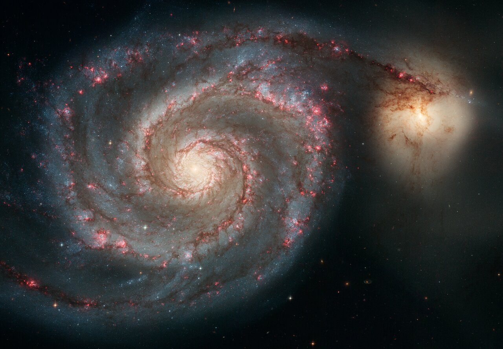
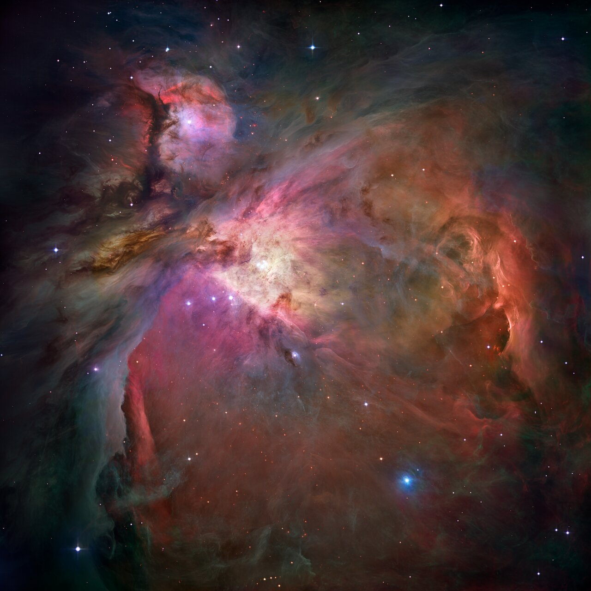
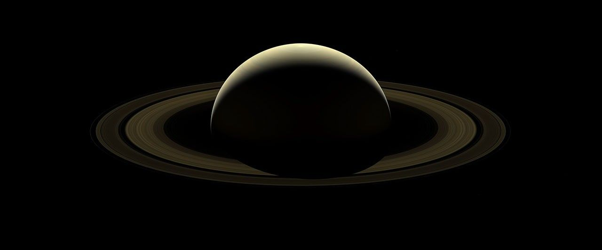

Whirlpool Galaxy
Hubble observationPink clouds trace the places where new stars are forming along M51’s spiral arms.
NASA, ESA, S. Beckwith (STScI), and the Hubble Heritage Team (STScI/AURA)Follow three observations from the rings of Saturn to the arms of a distant galaxy.

Pink clouds trace the places where new stars are forming along M51’s spiral arms.
NASA, ESA, S. Beckwith (STScI), and the Hubble Heritage Team (STScI/AURA)
Four massive young stars at the nebula’s center light up and sculpt the surrounding clouds of gas.
NASA, ESA, M. Robberto (STScI/ESA), and the Hubble Space Telescope Orion Treasury Project Team
Cassini captured this sunlit crescent and the surrounding rings shortly before its final descent into Saturn.
NASA/JPL-Caltech/Space Science Institute